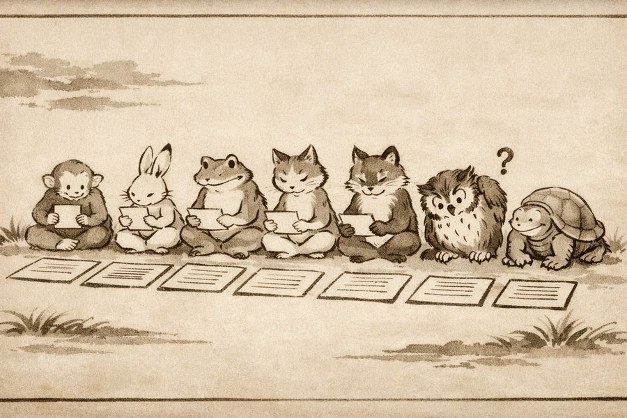

社会心理学
見れば誰でもわかる線の長さの比較。たった7人の見知らぬ他人が間違った答えを言うだけで、75%の人が少なくとも一度は自分の目を裏切る。
会議で明らかにおかしい方向に話が進んでいるのに、誰も異を唱えない。自分も黙っている——そんな経験は、おそらく誰にでもある。あのとき、自分は何を恐れていたのだろう。
友人グループの中で、自分だけ違う意見を持っていると気づいた瞬間。飲み会で全員が「おいしい」と言った料理に、自分だけ違和感を覚えたとき。場の空気を壊したくなくて飲み込んだ言葉は、一つや二つではないはずだ。
1951年、ある心理学者がこの沈黙を実験室に持ち込んだ。答えが明白な問題で、人はどこまで周囲に合わせるのか。結果は、彼自身を動揺させた。
この記事では、あなた自身が「周囲が決めた空気」の中で行動を選ぶ場面を4つ体験する。正解はない。ただ、選んだ後に残る感覚が、この実験を理解する最短距離になる。
1914年、ポーランドのウォヴィチという小さな町で、7歳のユダヤ人の少年が過越祭過越祭（ペサハ）
ユダヤ教の主要な祭日。古代エジプトで奴隷だったユダヤ人が解放された出来事を記念する。家族で食卓を囲み、特定の食事と祈りの儀式（セーデル）を行う。の食卓についていた。祖母がテーブルの空席にワインを注ぐ。「誰のため？」と聞くと、叔父が答えた。「預言者エリヤ預言者エリヤ
ユダヤ教・キリスト教・イスラム教で重要な預言者。過越祭ではエリヤが各家庭を訪れるとされ、テーブルに空席とワインを用意して迎える伝統がある。のためだよ」。少年は目を凝らした。やがて、叔父の示唆に導かれるようにして——グラスの中のワインが、ほんの少し減ったように見えた。
ワインは減っていない。だが少年は、叔父の言葉と自分の期待に引っ張られて、ないものを見た。何十年も後、大人になったこの少年——ソロモン・アッシュソロモン・アッシュ
1907–1996。ポーランド生まれ、アメリカの社会心理学者。ゲシュタルト心理学の影響下で印象形成・同調性の研究を行った。スタンレー・ミルグラムの指導教官でもある。——は、あの夜の経験を原点として同調性の研究に没頭することになる。
アッシュは第二次世界大戦後の世界を見て、より深い問いに取り憑かれていた。ナチス・ドイツでは、善良だったはずの人々がプロパガンダと集団圧力のもとで残虐行為に加担した。戦後のアメリカでも、マッカーシズムの嵐が吹き荒れていた。人はなぜ、自分の目と頭で考えることをやめるのか。
ソロモン・アッシュ（Solomon Asch）
ワルシャワに生まれ、13歳でアメリカに移住。英語をディケンズの小説で独学した。コロンビア大学でゲシュタルト心理学の創始者ヴェルトハイマーに師事。スウォースモア大学で19年間、同調性と印象形成の研究に没頭した。
実験の設計は驚くほど単純だった。8人の男子大学生が教室に座り、カードに描かれた線の長さを比較する。1枚目には基準線が1本、2枚目には比較用の線がA・B・Cの3本。どの線が基準線と同じ長さかを、一人ずつ声に出して答える。答えは一目瞭然——統制群統制群（コントロール群）
実験で比較の基準となるグループ。アッシュの実験では、サクラなしで1人だけで回答する条件を指す。実験群と比較することで、集団圧力の効果を測定できる。では正答率が99%を超えた。しかし8人のうち本当の被験者はたった1人。残りの7人はサクラサクラ（confederate）
実験者と共謀し、あらかじめ決められた行動をとる偽の参加者。心理学実験で広く用いられる手法で「協力者」とも呼ばれる。で、全18回の試行のうち12回で全員一致の間違った答えを言う。
正解は見ればわかる。Bだ。だがサクラ7人が順番に「A」と答えた後、被験者の番が来る。結果はアッシュ自身を動揺させた。75%の被験者が、少なくとも1回は多数派の誤答に同調した。全12回の重要試行を通じた同調率は平均37%——つまり3回に1回以上、被験者は自分の目ではなく周囲の声に従った。一方で25%の被験者は一度も折れなかった。
"The tendency to conformity in our society is so strong that reasonably intelligent and well-meaning young people are willing to call white black."
「我々の社会における同調への傾向はあまりに強く、知性も善意もある若者たちが、白を黒と言い切ってしまう」
— Solomon Asch, "Opinions and Social Pressure," Scientific American, 1955

アッシュの同調実験（イメージ）｜周囲が全員同じ答えを言うなか、一人だけが「？」を浮かべている——答えが明らかに間違っていても、自分だけ違うことを言えるか。
✗ よくある誤解
同調したのは頭の悪い人だけだ
✓ 実際は
スウォースモア大学の優秀な学生が被験者。知能や専攻による有意な差は確認されていない。
✗ よくある誤解
被験者は本当に線が同じに見えた
✓ 実際は
実験後のインタビューで大半が「間違いだとわかっていたが合わせた」と報告。知覚ではなく行動が変わった。
✗ よくある誤解
この実験は古くて現代では再現できない
✓ 実際は
2023年の追試でも33%の同調率を再現。オンライン環境でも同調は確認されている。
アッシュの実験は「線の長さ」という人工的な問題だった。だが同調圧力は、もっと日常的な場所で、もっと静かに作動している。以下の4つの場面に正解はない。ただ、選んだ瞬間に体が覚えている「あの感じ」を思い出してほしい。
| 氏名 | 所属 | 出欠 |
|---|---|---|
| 田中 太郎 | 営業部 | ○ 出席 |
| 佐藤 花子 | 企画部 | ○ 出席 |
| 鈴木 一郎 | 営業部 | ○ 出席 |
| 高橋 美咲 | 総務部 | ○ 出席 |
| 伊藤 健太 | 開発部 | ○ 出席 |
| 渡辺 麻衣 | 営業部 | ○ 出席 |
| 山本 翔太 | 企画部 | ○ 出席 |
| あなた | 開発部 | 未入力 |
4つの場面はどれも、アッシュの実験と同じ構造を持っている。自分の本心と、周囲の空気が違う。違うのに合わせてしまう。あるいは、合わせないことに居心地の悪さを感じる。アッシュが「線の長さ」という人工的な問題で発見したものは、あなたの日常のいたるところに埋まっている。
アッシュの実験後インタビューが明らかにしたのは、同調の動機が一枚岩ではないということだ。心理学者のドイッチとジェラードDeutsch & Gerard（1955）
同調の動機を「情報的影響」と「規範的影響」に分類した社会心理学者。アッシュの実験結果を理論的に整理する枠組みを提供した。は、1955年にこれを二つの原理に整理した。
同調を生む二つの心理メカニズム
規範的影響——嫌われたくない
Normative Social Influence
「間違いだとわかっていたが、浮きたくなかった」——アッシュの被験者の多くがこう答えた。社会的な罰を避けるために、自分の知覚に反する行動をとる。さっきの出欠表で「出席」を選んだ人、スタンディングオベーションで立った人は、この力を感じたはずだ。人間は社会的動物であり、所属を失うことは太古の昔から生存の危機を意味した。
情報的影響——みんなが言うなら正しいのかも
Informational Social Influence
少数だが、一部の被験者は本当に自分の目を疑った。7人が同じ答えを言うのを聞いて、「自分の目がおかしいのかもしれない」と考え始める。赤信号で周囲が渡り始めたとき、「実は青に変わっていたのか？」と一瞬思わなかっただろうか。全員一致の圧力は、明白な事実への確信さえ揺るがすことがある。
アッシュが記録した同調者のうち、大多数は規範的影響に該当する。しかし少数ながら、本気で自分の知覚を疑った被験者がいたことも重要だ。同調は「嘘をつく」だけではない。集団は、現実の見え方そのものを書き換えることがある。
アッシュ自身は、この結果を「人間は弱い」という結論に回収することを強く拒んだ。彼が強調したのは、3分の2の試行では被験者が正しい答えを言ったという事実だ。独立性のほうが同調より2倍多い。しかし——と、私は思う。それでも75%が少なくとも一度は折れた、という事実は重い。4人に3人は、答えが明白な問題で、少なくとも一度は自分の目を裏切った。何の利害も脅迫もない教室で。
アッシュの実験室では、同調のコストは「恥ずかしい」程度だった。だがフィクションの世界はこれを極限まで引き上げる。同調すれば生き残り、逆らえば死ぬ——そんな設定のデスゲーム作品が、2000年代以降、漫画・映画・ドラマで爆発的に増えた。どの作品にも、アッシュが発見した同調のメカニズムがそのまま組み込まれている。
| 作品名 | 同調圧力が現れる場面 | アッシュ実験との対応 |
|---|---|---|
| 今際の国のアリス Netflix / 漫画 | 「どくぼう」——首輪に表示されるマークを他人に教えてもらうしかないが、嘘つきが紛れている。誰を信じるか。 | 情報的影響。自分では確認できないから、多数派の証言を信じるしかない。 |
| ダンガンロンパ ゲーム / アニメ | 学級裁判で犯人を投票。間違えると全員処刑。議論の流れに巻き込まれる。 | 規範的影響＋情報的影響。「みんながこの人を疑ってるから自分も」。 |
| ライアーゲーム 漫画 / ドラマ | 多数決ゲーム。組織票で少数派が排除される。「こっち側につけ」という圧力。 | 規範的影響。多数派に入らないと淘汰される構造そのもの。 |
| イカゲーム Netflix | ビー玉ゲーム。パートナーを騙すか正直にやるか。周囲が騙し始めると空気が変わる。 | 規範的影響。「みんな裏切ってるのに、自分だけ正直でいるのは損」。 |
| Among Us ゲーム | 会議で誰を追放するか投票。声の大きい人の意見に流される。 | 規範的影響＋情報的影響。「2人がアイツを怪しいと言ってるから」。 |
| バトル・ロワイアル 映画 / 小説 | 信頼していたクラスメイトが武器を取る。疑心暗鬼の空気が一気に全体を覆う。 | 情報的影響。「他の人が戦い始めたから、自分も武装しないと殺される」。 |
これらの作品が面白いのは、アッシュの実験室では「恥をかく」だけだった同調のコストを、「死」にまで引き上げているからだ。しかし構造は同じだ——多数派が間違っているかもしれないのに、逆らうコストが高すぎて従ってしまう。逆に言えば、これらの作品を見てハラハラする感覚は、アッシュが実験で捉えたものと地続きにある。会議で黙る自分と、学級裁判で流される自分は、同じ力に動かされている。
1951
スウォースモア大学で最初の実験
50人の男子学生を対象に実施。約75%が少なくとも1回は多数派に同調。アッシュ自身が結果に動揺した。
1955–56
変数を操作した追加実験
味方が1人いるだけで同調率が5〜10%に急落。書面回答にすると同調は3分の1に低下。Scientific Americanで一般向け解説を発表。
1963
ミルグラムの服従実験
アッシュの教え子ミルグラムが、同調の研究を「権威への服従」に拡張。65%が最大電圧まで従った。
1980
「時代の子」批判
ペリンとスペンサーがイギリスで追試し同調がほぼ消失。「1950年代マッカーシズムの産物だ」との批判。
1996
ボンドとスミスの大規模メタ分析
17カ国133研究を統合。集団主義的な文化圏ほど同調率が高いが、効果そのものはどこでも消えていない。同年、アッシュが88歳で死去。
2023
現代の追試——33%が再現される
210人の追試で33%の同調率を再現。金銭インセンティブがあっても25%が同調。政治的意見への同調率は38%。
アッシュの研究でもっとも重要な発見は、同調を生む条件ではなく、同調を壊す条件かもしれない。サクラの中にたった1人、正しい答えを言う人物がいるだけで、同調率は75%から5〜10%に急落した。全員一致が崩れた瞬間、被験者は自分の目を信じる力を取り戻す。
全員が同意していることが問題なのではない。誰も異を唱えないことが問題なのだ。
さっきの出欠表で「欠席」を選んだ人がいたとする。もしあなたの前に「× 欠席」が1つでも見えていたら、断りやすくなったのではないだろうか。ドーナツの最後の1個も、誰か1人が「食べていい？」と言えば空気が変わる。アッシュが発見したのは人間の弱さだけではない。構造を変えるのに必要なのは、たった一人の異議だということも、同時に発見した。
いや——そう簡単に「一人目になろう」と書いてしまうのは、少し無責任だろうか。アッシュの実験では、合わせてしまった被験者の多くが、実験後に安堵の表情を見せたという。彼らは自分が屈したことを知っていた。知っていて、なお声を出せなかった。その苦しさを軽視したくはない。
Candid Camera「エレベーター実験」（1962）
アメリカのドッキリ番組がアッシュの実験に着想を得て制作。エレベーターで全員が後ろを向く中、何も知らない乗客が次々と後ろを向いてしまう映像は、同調の力を可視化した最も有名な瞬間の一つ。
映画『十二人の怒れる男』（1957）
陪審員12人のうち11人が「有罪」に傾く中、たった1人が「無罪」を主張し続ける。アッシュが発見した「一人の味方」の効果を法廷ドラマとして体現した作品。
アッシュ自身が一般読者向けに書いた解説。
Culture and Conformity: A Meta-Analysis of Studies Using Asch's Line Judgment Task
17カ国133研究のメタ分析。文化と同調率の関係を統計的に検証。
The Power of Social Influence: A Replication and Extension of the Asch Experiment
210人による現代の追試。33%の同調率を再現。